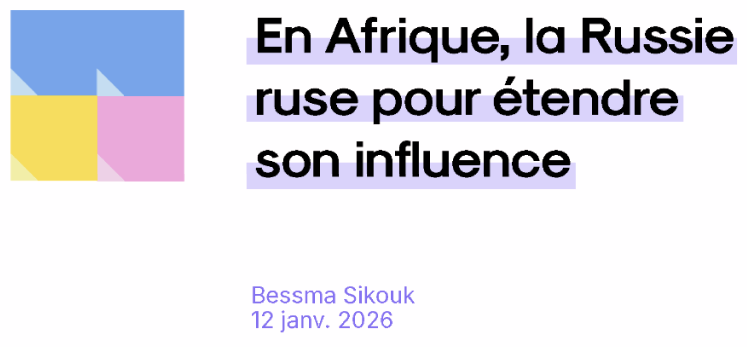
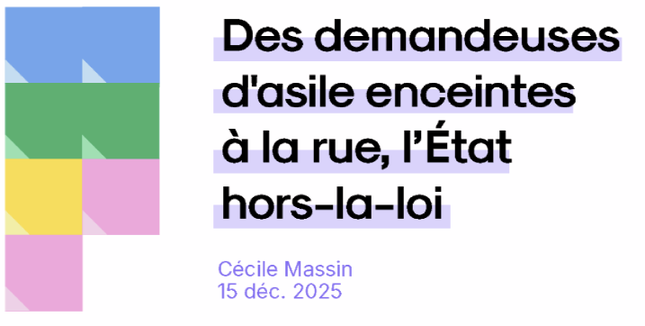
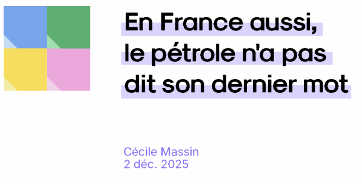

En Afrique, la Russie ruse pour étendre son influence
Equivalents de nos Instituts français, les "Maisons russes" servent d’instrument de soft power au Kremlin pour accroître son influence en Afrique. C'est l'objet de l'enquête de Driss Rejichi, journaliste du média Afrique XXI.
Bessma Sikouk
12 janv. 2026
Découvrir l'enquête initiale
Rembobine est un média indépendant et un projet entrepreneurial et associatif qui vise à réconcilier les citoyen·nes avec le journalisme en démontrant les impacts institutionnels, judiciaires, médiatiques et public de ce dernier sur la société
Pour les pressés, on vous a résumé l'enquête et son impact en 30 secondes.
Comprendre l’enquête en 30 secondes.
Sous l'impulsion du Kremlin, des
“Maisons russes” se développent
à vitesse grand V sur le continent
africain.
Equivalents de nos Instituts français,
ces établissements culturels servent
d’instrument
de soft power à la Russie pour
accroître son influence en Afrique.
Et son impact en encore moins
de temps !
Sur le continent africain, l'enquête n'a
pas laissé les diplomates occidentaux
indiférent·es et, dans le même temps,
le sujet a été relayé par la presse.
Pour autant, les “Maisons russes”
continuent à se développer et la
question de la diplomatie culturelle
continue, trop souvent, d'être
reléguée au second plan.
e temps !
Sur le continent africain, l'enquête n'a
pas laissé les diplomates occidentaux
indiférent·es et, dans le même temps,
le sujet a été relayé par la presse.
Pour autant, les “Maisons russes”
continuent à se développer et la
question de la diplomatie culturelle
continue, trop souvent, d'être
reléguée au second plan.
Les impacts c'est quoi ?
Les types d'impact
Les impacts correspondent à l'ensemble des changements, réactions ou conséquences mesurables provoqués dans la société par la publication d'une enquête journalistique.
Institutionnel
Décisions politiques, réformes ou changements de gouvernance.
Judiciaire
Enquête, procès ou condamnations judiciaires.
Médiatique
Reprises dans les médias, par influenceurs ou OMG.
Public
Mobilisations citoyennes, campagnes ou pétitions.
Selon vous quel domaine a été le plus impacté ?
Découvrez le schéma des impacts de l'enquête

Malgré une reprise par certains médias, l'enquête sur les “Maisons russes”
a eu peu d'effets concrets. Aucune structure n'a été condamnée et
ces centres continuent leurs activités en Afrique, parfois sous d'autres forme, montrant
les limites de l'impact immédiat de journalisme d'investigation.
Cela souligne l'importance de la mobilisation citoyenne : partager
l'enquête, en parler, la relayer ou soutenir les journalistes permet de prolonger son
impact.
Vous pouvez découvrir les enquêtes précédentes !

